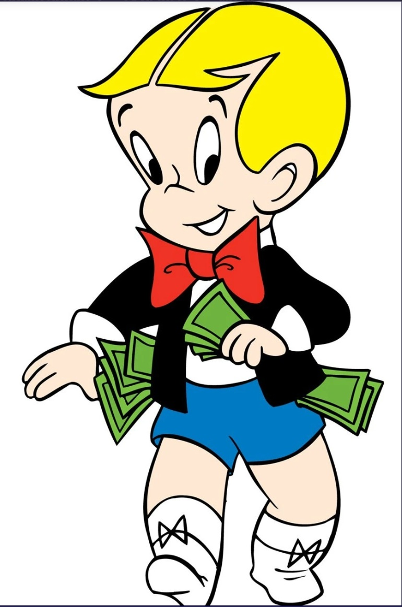

Literature
Ron English, Fauxlosophy: The Art of Ron English (San Francisco: Last Gasp, 2016), p. 166. ISBN 978-0867196566.
Notes
In the Singapore and Paris Opera Gallery catalogues, this work is titled Batmen and Robin Rich.
Ancillary Documentation
The following reference images document visual source material associated with the composition.




Selected Online Circulation
Selected examples of the work’s online circulation, reproduction, or discussion. This list is not exhaustive; it is intended to document representative appearances of the image beyond formal exhibition and publication records.